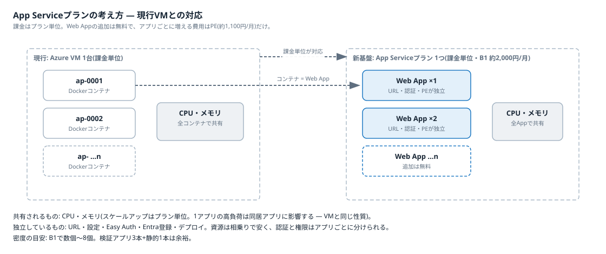

03 解説ノート · 01/05
App Serviceプランの考え方
課金単位であるApp Serviceプランの上にWeb Appを複数載せ、現行VM運用の「1台にコンテナを詰め込む」経済性を再現する仕組みを整理する。
現行VMとの対応

クリックで拡大
| 現行(VM運用) | App Service |
|---|---|
| Azure VM 1台 | App Serviceプラン 1つ(課金単位。B1 約2,000円/月) |
| Dockerコンテナ ×n | Web App ×n(追加無料) |
| コンテナごとの設定 | Web Appごとの独立したURL・設定・Easy Auth・Entra登録・デプロイ |
共有されるものと独立しているもの
- 共有(プラン単位): CPU・メモリ。スケールアップ(B1→B2)はプラン単位で、1つのアプリの高負荷は同居アプリに影響する。VM内のコンテナと同じ性質
- 独立(Web App単位): URL・設定・Easy Auth・Entra IDアプリ登録・デプロイ。資源は相乗りで安く、認証と権限はアプリごとに分けられる。「1業務アプリ=1 Web App=1アプリ登録」の1:1を保てる根拠(認可の使い分けは notes/authorization.md)
費用と密度
- アプリを追加して増える費用はPrivate Endpoint(約1,100円/月)だけ。プラン・Web Appの追加費用はゼロ
- 密度の目安はB1で数個〜8個。検証アプリ3本+静的サイト1本は余裕
- 詰め込みすぎて遅くなったら、アプリを別プランへ移すかプランをスケールアップする。この判断も現行VMの増強判断と同じ感覚でできる
Azureアプリ公開基盤(検証フェーズ) · 正本は Markdown(docs/) · インデックス